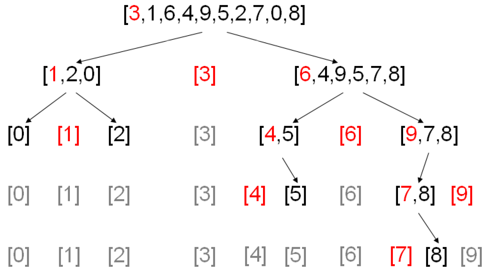

Der Quicksort...
...ist ein schneller, rekursiver, nicht-stabiler Sortieralgorithmus, der nach dem Prinzip "Divide and conquer" arbeitet. Er wurde ca. 1960 von C. Antony R. Hoare in seiner Grundform entwickelt und seitdem von vielen Forschern verbessert. Der Algorithmus hat den Vorteil, dass er über eine sehr kurze innere Schleife verfügt, was die Ausführungsgeschwindigkeit stark erhöht.
Prinzip
Zunächst wird die zu sortierende Liste in zwei Teillisten („linke“ und „rechte“ Teilliste) getrennt. Dazu wählt Quicksort ein sogenanntes Pivotelement (im Bild in Rot) aus der Liste aus. Alle Elemente, die kleiner als das Pivotelement sind, kommen in die linke Teilliste, und alle, die größer sind, in die rechte Teilliste. Die Elemente, die gleich dem Pivotelement sind, können sich beliebig auf die Teillisten verteilen. Nach der Aufteilung sind die Elemente der linken Liste kleiner oder gleich den Elementen der rechten Liste.
Anschließend muss man also noch jede Teilliste in sich sortieren, um die Sortierung zu vollenden. Dazu wird der Quicksort-Algorithmus jeweils auf der linken und auf der rechten Teilliste ausgeführt. Jede Teilliste wird dann wieder in zwei Teillisten aufgeteilt und auf diese jeweils wieder der Quicksort-Algorithmus angewandt, und so weiter. Diese Selbstaufrufe werden als Rekursion bezeichnet. Wenn eine Teilliste der Länge eins oder null auftritt, so ist diese bereits sortiert und es erfolgt der Abbruch der Rekursion. Nun müssen die Teillisten nur noch wieder aneinander gehängt werden.